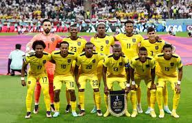
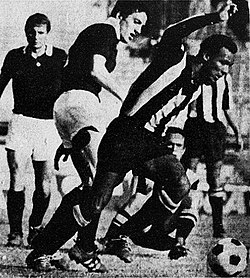

El fútbol en Ecuador ha desempeñado un papel central en la identidad y cultura del país, convirtiéndose en mucho más que un simple deporte. Desde sus inicios a finales del siglo XIX, cuando se introdujo el fútbol por primera vez en ciudades como Guayaquil, este deporte ha experimentado un crecimiento constante, transformándose en una pasión nacional que une a ecuatorianos de todas las edades y clases sociales.
La profesionalización del fútbol ecuatoriano se consolidó a lo largo del siglo XX, con la creación de la Federación Ecuatoriana de Fútbol (FEF) en 1925. Este hito marcó el inicio de la participación del país en competiciones internacionales y sentó las bases para el desarrollo estructurado del deporte. A lo largo de las décadas, los clubes locales han competido en torneos nacionales e internacionales, consolidando la presencia ecuatoriana en la escena futbolística global.
El punto culminante del fútbol ecuatoriano ha sido la clasificación a la Copa Mundial de la FIFA. Ecuador logró este hito por primera vez en 2002, seguido de participaciones posteriores en 2006 y 2014. Estas gestas no solo elevaron la reputación del fútbol ecuatoriano a nivel mundial, sino que también generaron un orgullo nacional y una mayor atención hacia el deporte.
A pesar de los desafíos y altibajos, el fútbol ecuatoriano sigue siendo un fenómeno que une a la nación. Más allá de la competición, el deporte ha demostrado ser un factor de cohesión social, proporcionando momentos de alegría y celebración, así como también generando un sentido de identidad compartida entre los ecuatorianos, marcando así una presencia duradera en la historia y la cultura del país.
El fútbol en Ecuador tiene sus raíces en la última década del siglo XIX, cuando el deporte fue introducido por inmigrantes europeos, especialmente en la ciudad de Guayaquil. Los primeros clubes y equipos comenzaron a formarse, y se celebraron los primeros partidos informales. Sin embargo, la formalización y organización del fútbol ecuatoriano tomaron impulso en la década de 1920 con la fundación de la Federación Ecuatoriana de Fútbol (FEF) en 1925. Este evento marcó el inicio de una estructura más organizada para el fútbol en el país y permitió la participación en competiciones internacionales.
El fútbol, a lo largo de los años, se ha convertido en más que un simple deporte en Ecuador; es una manifestación de la identidad nacional y una fuente inagotable de pasión y orgullo. Este ensayo se sumerge en la rica historia del fútbol ecuatoriano, explorando sus orígenes, momentos destacados y su papel en la construcción de una cultura futbolística única en el país.
El fútbol llegó a Ecuador a finales del siglo XIX, llevando consigo la emoción y la camaradería que caracterizan a este deporte. A medida que se establecían los cimientos de las competiciones locales, el país comenzó a forjar una relación especial con el balompié. La creación de la Federación Ecuatoriana de Fútbol en 1925 marcó un hito crucial, estableciendo una plataforma organizada para el desarrollo y la promoción del deporte a nivel nacional.
La LigaPro, como la principal liga de fútbol profesional en Ecuador, ha sido testigo de emocionantes rivalidades entre clubes provenientes de diversas ciudades y regiones del país. Esta diversidad geográfica no solo añade un elemento competitivo a la liga, sino que también refleja la pasión compartida por el fútbol en cada rincón de Ecuador. La liga no solo es un escenario para la competencia, sino también un terreno donde se celebra la rica diversidad cultural del país.
En conclusión, el fútbol ecuatoriano es mucho más que un deporte; es un vehículo que une a una nación a través de la emoción compartida, la celebración cultural y la identidad nacional. Desde sus modestos inicios hasta las hazañas internacionales, el fútbol ha tejido una narrativa que refleja la determinación, la unidad y la pasión innata de los ecuatorianos. El fútbol en Ecuador no solo se juega en estadios; late en el corazón de la gente y se manifiesta como una expresión vibrante de lo que significa ser ecuatoriano.
El fútbol se ha convertido en una pasión nacional en Ecuador. Los estadios llenos de aficionados apasionados, la creación de cánticos y tradiciones propias, y la atención ferviente a los partidos de la selección nacional demuestran la intensidad y la devoción que los ecuatorianos tienen por este deporte.
La geografía montañosa y diversa de Ecuador se refleja en la distribución de equipos y rivalidades regionales en el fútbol. Clubes de diferentes ciudades y regiones compiten en las ligas nacionales, creando rivalidades que trascienden lo deportivo y se arraigan en la identidad cultural de cada área.
La altitud de ciudades como Quito ha generado un factor único en el fútbol ecuatoriano. La adaptación a la altitud se ha convertido en un desafío tanto para los equipos locales como para los visitantes, y los partidos jugados en estadios ubicados a gran altitud a menudo presentan un factor adicional que influye en el desarrollo del juego.
El fútbol ecuatoriano tiene sus raíces a finales del siglo XIX y principios del siglo XX, cuando el deporte comenzó a tomar fuerza en el país. La introducción del fútbol se atribuye principalmente a influencias extranjeras, especialmente de inmigrantes europeos y docentes británicos que trajeron consigo la pasión por este deporte. Se cree que el primer partido de fútbol en Ecuador se jugó en la ciudad de Guayaquil en 1899, marcando un hito crucial en el surgimiento del fútbol como una actividad recreativa y competitiva en el país.
A medida que se formaron los primeros clubes y equipos de fútbol en Ecuador, el deporte se consolidó como una parte integral de la cultura y la sociedad. La Federación Ecuatoriana de Fútbol (FEF) fue fundada en 1925, marcando un paso importante hacia la organización y regulación del fútbol en el país. En esta etapa inicial, el fútbol era principalmente una actividad urbana, con Guayaquil y Quito liderando el desarrollo del deporte.

La década de 1950 marcó un período de expansión y crecimiento del fútbol ecuatoriano, con la participación del país en competiciones internacionales y la mejora de las infraestructuras deportivas. La creación de la Serie A, la máxima categoría del fútbol ecuatoriano, en 1957, proporcionó una plataforma para el desarrollo del talento local y la intensificación de la competencia nacional. El Club Sport Emelec y Barcelona Sporting Club, dos de los clubes más destacados, jugaron un papel crucial en el crecimiento del fútbol profesional en Ecuador.
En las décadas posteriores, el fútbol ecuatoriano continuó evolucionando, con la clasificación a la Copa Mundial de la FIFA en 2002, marcando un hito histórico para el deporte en el país. La participación de jugadores ecuatorianos en ligas extranjeras también contribuyó a elevar el nivel y la visibilidad del fútbol ecuatoriano a nivel internacional. A lo largo de los años, el fútbol ha trascendido las barreras geográficas y sociales, convirtiéndose en una pasión nacional que une a la población ecuatoriana en torno a sus equipos y selección nacional.